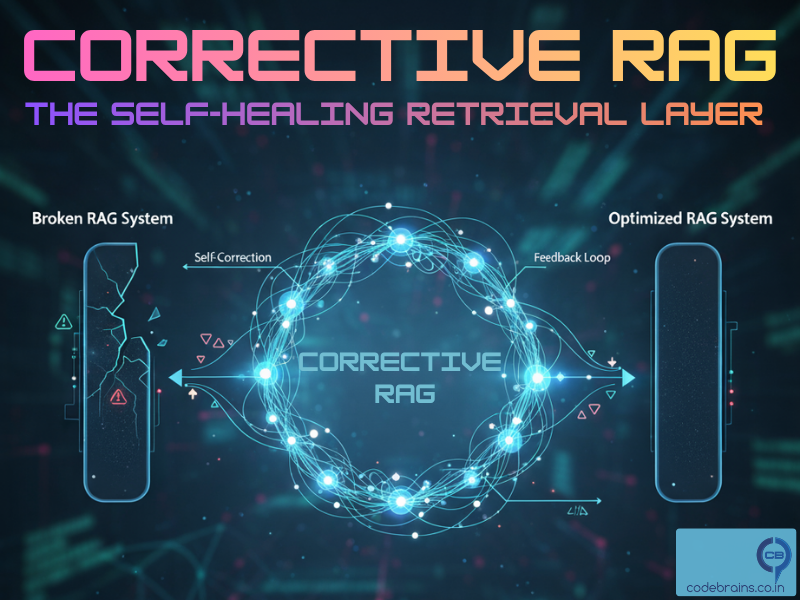
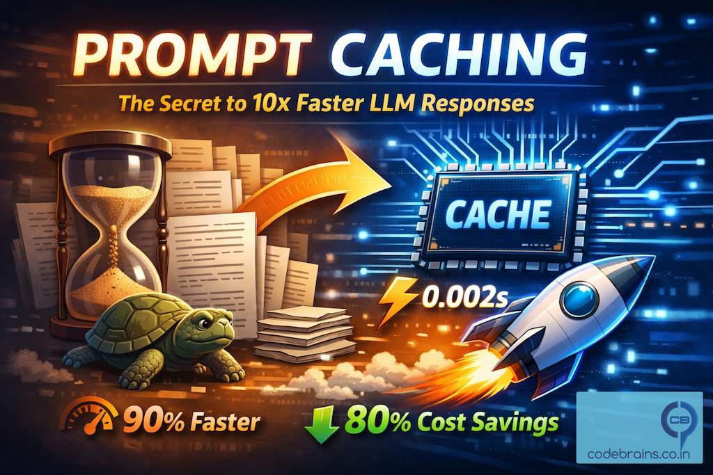
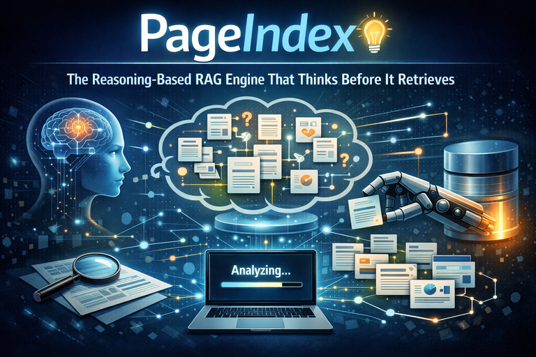
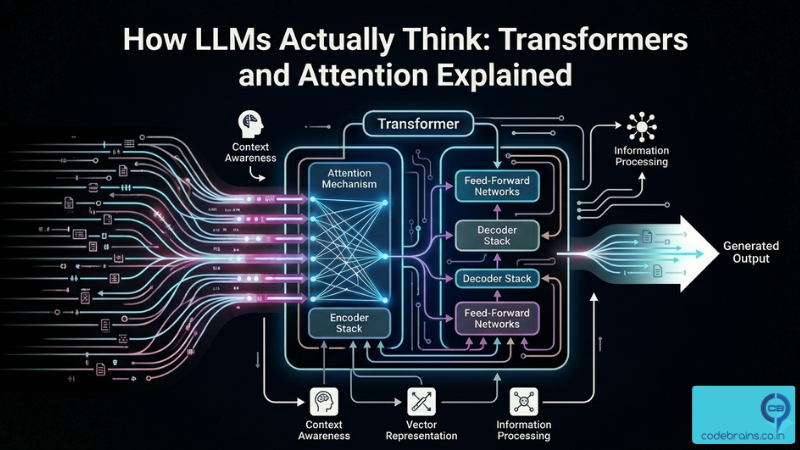
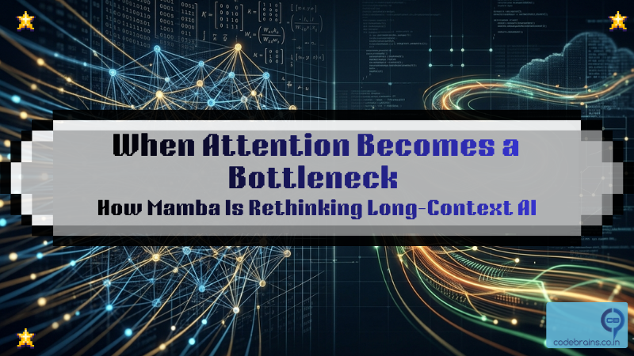
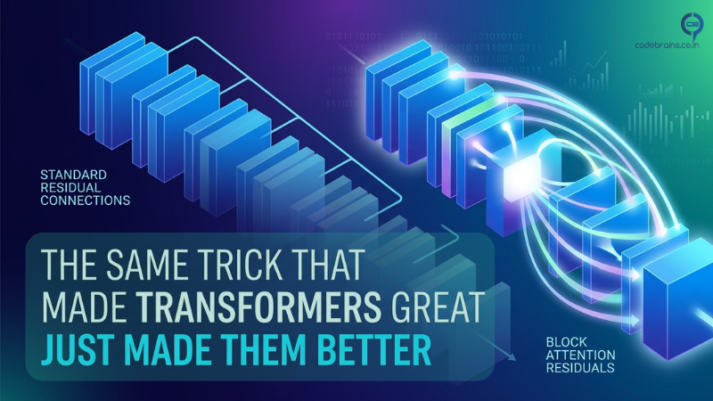

About This Series
Building AI-powered web applications requires understanding key architectural patterns and techniques. This blog series aims to demystify the essential AI building blocks you need to create robust, scalable, and intelligent web applications that deliver real value.
Each post in this series explores different AI augmentation strategies, their implementation details, and how to choose the right approach for your specific use case. Whether you're a developer, architect, or product manager, these articles will help you navigate the rapidly evolving AI landscape and build systems that actually work in production.
Series Articles

RAG: The Missing Link Between your Data and AI That actually Works
RAG is a technique that gives an LLM access to external knowledge. Think of it like this: an LLM without RAG is a brilliant student who only knows what they learned in class. This foundational post explains how RAG works, why it's essential, and how to implement it in your applications.

RAG vs CAG vs KAG: Choosing the Right Augmentation Strategy for Your AI System
RAG isn't always the answer. Sometimes you need CAG. Sometimes you need KAG. And most of the time, you need a combination of all three. This post breaks down when to use each approach, why they exist, and how to choose the right strategy for your specific use case.

Vector Databases: The Search Engine Your RAG System Actually Needs
Vector databases are the unsung heroes of modern AI applications. They make it possible for large language models (LLMs) to search, compare, and retrieve relevant pieces of information quickly even when you don’t phrase your query exactly the same way as the stored data. Let's explore how AI systems actually find relevant documents so fast.

Model Context Protocol: The Universal Adapter Your AI Stack Actually Needs
Model Context Protocol (MCP) is the universal adapter for AI-data integration. Learn how MCP eliminates N×M integration complexity, connects AI to PostgreSQL, GitHub, Slack, and more with zero custom code, and why it's becoming the standard for production AI systems.

Context Rot: The Silent Performance Killer in Your RAG System
Your RAG system’s accuracy isn’t dropping because of bad retrieval, it’s drowning in context. Explore how context rot quietly builds up in production AI systems, why LLMs degrade with longer context windows, and how to design cleaner, more efficient retrieval pipelines

Context Engineering: The Discipline Your AI System Desperately Needs
Building an AI system is easy. Keeping it intelligent over time that’s the real challenge. This post introduces “Context Engineering,” a discipline that treats information design, freshness, and observability as core to AI success. Learn how to prevent context rot, reduce costs, and make your LLM systems production-grade.

Semantic Cache: The Smartest Way to Speed Up RAG (Without More GPUs)
Semantic caching makes your RAG system faster and smarter by reusing answers based on meaning, not just matching words. A practical guide to boosting performance without adding GPUs.

Corrective RAG: The Self-Healing Retrieval Layer Your RAG System Desperately Needs
Corrective RAG is the self-healing layer your retrieval pipeline has been missing. It detects when your vector search returns outdated or irrelevant documents, validates whether the context truly answers the query, and automatically corrects retrieval failures through filtering, re-searching, or reformulating queries ensuring your LLM always works with high-quality context.

Prompt Caching: The Secret to 10x Faster LLM Responses
Prompt caching is the secret to dramatically faster LLM responses. It works by storing and reusing previously computed outputs for identical or similar prompts, eliminating redundant processing and reducing latency.

PageIndex: The Reasoning-Based RAG Engine That Thinks Before It Retrieves
Reasoning-based retrieval is a new approach to RAG that moves beyond vector search by letting LLMs navigate document structure like humans. Tools like PageIndex use hierarchical indexing and reasoning to improve accuracy for long, complex documents.

How LLMs Actually Think: Transformers and Attention Explained
Understand how transformers actually work without the math overload. Learn why RNNs failed, how attention replaced them, and how the transformer block is assembled. Built for engineers who want to reason clearly about LLM behavior.

When Attention Becomes a Bottleneck: How Mamba Is Rethinking Long-Context AI
Transformer attention scales quadratically. Learn how Mamba and state space models solve the long-context problem and what it means for your AI architecture.

The Same Trick That Made Transformers Great Just Made Them Better
The third and final post in this series closes the loop on transformer internals. We started with how attention works across tokens, then looked at its quadratic cost, and now we go deeper: how applying the same attention principle across layers rather than sequences turns out to make transformers meaningfully better. Closing chapter of a series worth reading start to finish.